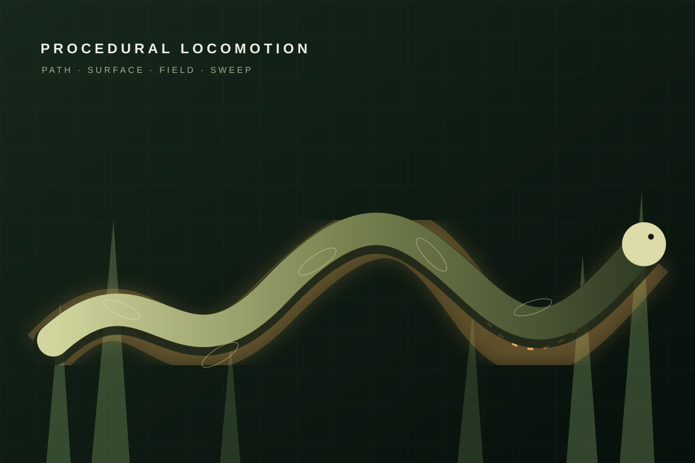

LAB 01
LAB 01
Outfit Director
从换装提示词导演出发，对照真实视频基线，并继续探索 2D 虚拟试衣的可接入路径。
- M1–M13 转场机制
- T2V / I2V 真实视频
- 2D VTON 验证台
0819 · OPEN-SOURCE RESEARCH ATLAS
一个长期维护的开源项目研究索引。每个子项目都区分上游能力、研究扩展与真实产物，并提供可以直接进入的场景化演示。
选择一个研究项目 ↓先看项目解决什么，再进入对应能力实验室。六个入口互相独立，共用同一套“事实、边界、证据”研究标准。
LAB 01
从换装提示词导演出发，对照真实视频基线，并继续探索 2D 虚拟试衣的可接入路径。
 LAB 02
LAB 02
 LAB 03
LAB 03

LAB 04留档 Three.js 草地环境、轨迹驱动蛇身与环境反馈实现，供长体角色或交互植被需求按需复用。
 LAB 05
LAB 05
展示宿主大模型如何先明确模糊想法，再由规则型 Skill 生成、检查并推荐可进入写作流程的选题与标题。
 LAB 06
LAB 06
用四个真实案例解释 OpenCV 墨迹坐标、落笔排序和累计遮罩如何生成黑白落墨、彩色刷回与画手跟随效果。
 LAB 07
LAB 07
把 Lineworld 的程序化狗、兔子与线稿森林扩展为“嗅闻—潜近—追逐—选择—跨局引路”的中文叙事游戏原型。
记录来源、版本与许可证，不把公开仓库误认为任意授权。
用最短链路解释输入、核心编排与真实输出。
选择代表用例，让读者看到能力对应的目标效果。
区分提示词、预生成素材、真实模型和研究扩展。
主仓库保存索引、研究笔记和可发布演示；许可证未明确的上游源码只保存在本地忽略目录，不随研究仓库再分发。
查看 GitHub 仓库 ↗